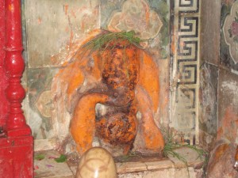

<?xml version="1.0" encoding="UTF-8"?><rss version="2.0"
	xmlns:content="http://purl.org/rss/1.0/modules/content/"
	xmlns:wfw="http://wellformedweb.org/CommentAPI/"
	xmlns:dc="http://purl.org/dc/elements/1.1/"
	xmlns:atom="http://www.w3.org/2005/Atom"
	xmlns:sy="http://purl.org/rss/1.0/modules/syndication/"
	xmlns:slash="http://purl.org/rss/1.0/modules/slash/"
	>

<channel>
	<title>Uddand Mund Vinayak &#8211; Varanasi Temples</title>
	<atom:link href="index.html" rel="self" type="application/rss+xml" />
	<link>../../../../index.html</link>
	<description>Temples of Varanasi as referred to in Kashi Khand</description>
	<lastBuildDate>Thu, 19 Jun 2025 05:16:46 +0000</lastBuildDate>
	<language>en-US</language>
	<sy:updatePeriod>hourly</sy:updatePeriod>
	<sy:updateFrequency>1</sy:updateFrequency>
	<generator>https://wordpress.org/?v=4.6.29</generator>
	<item>
		<title>UDDAND MUND VINAYAK</title>
		<link>../../../../vinayak-temples/uddand-mund-vinayak/index.html</link>
		<pubDate>Fri, 07 May 2010 16:28:18 +0000</pubDate>
		<dc:creator><![CDATA[admin]]></dc:creator>
				<category><![CDATA[Uddand Mund Vinayak]]></category>
		<category><![CDATA[Vinayak Temples]]></category>
		<category><![CDATA[trilochan]]></category>

		<guid isPermaLink="false">../../../../p=91.html</guid>
		<description><![CDATA[Uddand Mund Vinayak is located at A-2/80, Trilochan Temple. Uddand Mund Vinayak grants all sorts of blessings and prosperity to the devotees. Nearby, devotees can find Pilpila Teerth, which was attached much importance in Kashi Khand and is existing now in the form of a Koop (well). Devotees can travel almost upto this place by [&#8230;]]]></description>
				<content:encoded><![CDATA[<p style="text-align: left;">Uddand Mund Vinayak is located at A-2/80, Trilochan Temple. Uddand Mund Vinayak grants all sorts of blessings and prosperity to the devotees. Nearby, devotees can find Pilpila Teerth, which was attached much importance in Kashi Khand and is existing now in the form of a Koop (well). Devotees can travel almost upto this place by rickshaw and walk a small distance on foot upto this temple.</p>
<h3></h3>
<p><strong>Please watch our YouTube Video about Uddand Mund Vinayak at following Link</strong></p>
<p>&nbsp;</p>
<h3><a href="https://www.youtube.com/watch?v=NFXHu2NC_JM&amp;t=56s">https://www.youtube.com/watch?v=NFXHu2NC_JM&amp;t=56s</a></h3>
<h3></h3>
<h3></h3>
<h3>TYPES OF POOJA</h3>
<p>The temple is open for worship 05.30 a.m. to 12.00 noon and 05.00 p.m. to 11 p.m.  Mangala Aarti is performed at 05.30 a.m. and Shayan Aarti at 11.00 p.m.</p>
]]></content:encoded>
			</item>
	</channel>
</rss>
